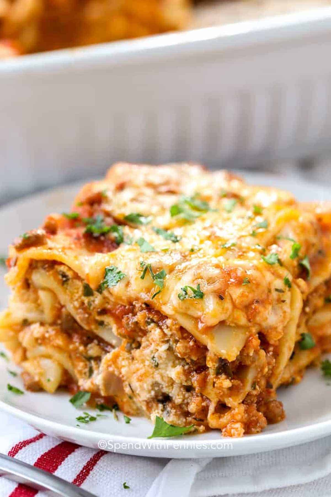

Home
Lasagna

Description
This recipe has been called the best by many and has thousands of 5-star reviews!
It uses simple ingredients that you likely have on hand, and it packs big flavor!
This is an easy lasagna recipe. It requires just one pan, one bowl, and a 9×13 baking dish.
It reheats well and can be made ahead of time. You can freeze lasagna either before or after baking.
Ingredients
- Cheese
- Meat
- Sauce
- Spinach
Steps
- Boil pasta: In a large pot of salted water boil lasagna noodles per the recipe below.
- Prepare meat sauce: Cook sausage and beef with onion and garlic. Drain well, add the pasta sauce & simmer it for a few minutes to thicken.
- Combine cheese mixture: Stir the cheese mixture together in a bowl.
- Layer & bake: Layer the meat sauce and cheese mixture with lasagna noodles and bake until the top of the lasagna is golden brown.
For full recipe refer to the website